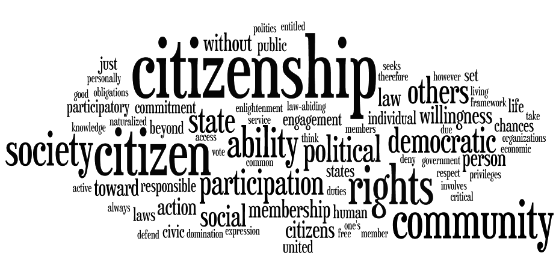

|  |
I believe honesty, compassion, respect, responsibility, and courage are necessary components of good citizenship.
Citizenship is being a member of a larger group all working towards a common goal
Honesty is the ability to be truthful with both yourself and others. Honesty is necessary because if you are not honest then the other community members will not be able to know the real you.
Compassion is being there for anyone who needs help. Compassion is necessary because everybody has things that they deal with whether that need help with them or not. Regardless, it is important to be there and be compassionate.
Respect is being able to understand people's boundaries and needs. Respect is necessary because everyone wants to be treated with respect and being a good citizen includes respecting differences.
Responsibility is being held accountable for your actions and duties. Responsibility is necessary because without responsibility, life would be meaningless and empty.
Courage is not feeling afraid of doing something that would usually scare someone. Courage is necessary because with courage you can't show yourself and others that anything you want to acomplish is possible.
Another component of citizenship is trust. Trust is probably the most valuable component of citizenship because trust is the foundation of all relationships.
Here are some ways to be a good citizen
Images from: http://www.upsctoday.com/community-certificate-date-of-obc-for-upsc/ and http://www.thesynergycentre.org/active-citizenship/
Some definitions from Merriam Webster